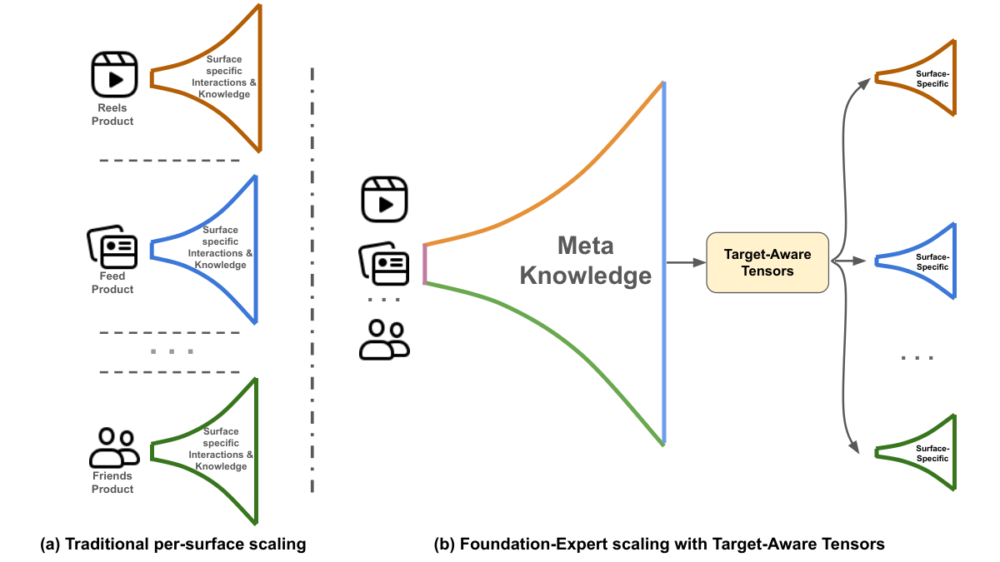
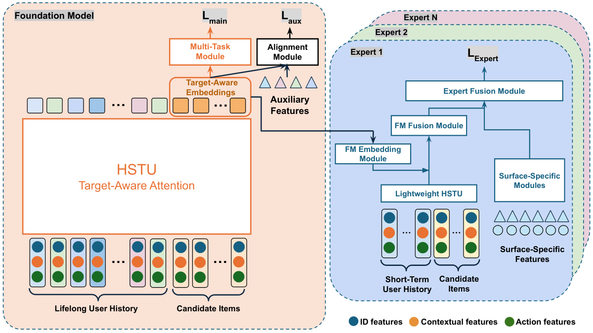

目录 · 10 节
1它到底在解决什么问题？2流程总览：一个中心模型，多个场景专家3带目标的向量：每个候选物品各有一个4中心模型怎么训：主任务管通用，辅助任务管对齐5专家怎么用这些向量6系统怎么撑起来7实验：转化率、泛化和线上效果8我认为它的局限9一个推荐团队可以怎么试10评价分享 SHARE
有多个推荐场景、又想把一个大模型的收益分给所有场景的团队值得读这篇，因为它给出了一条比蒸馏更省事、转化率也高得多的路，而且已经在 Meta 全量上线。核心思想一句话：中心大模型为每个候选物品实时算一个“结合了用户全部历史和这个物品”的向量，各场景的小模型把它当输入特征用，而不是当软标签去模仿。大模型变强之后，场景小模型能吃到 64% 到 100% 的提升，作者称蒸馏和静态用户向量只有 10% 到 30%；线上单场景对照的大盘指标提升 0.050%，上线以来多个场景累计 0.359%，训练用的 GPU 比各场景各自扩模型少约三分之二。
它到底在解决什么问题？
先看一个示意场景。一家公司有短视频、信息流、好友动态三个推荐场景，每个场景各有一个排序模型。推荐模型越大越好这件事已经有不少证据，于是每个场景都想把自己的模型做大。问题是，训练一个大推荐模型要几百上千张 GPU，三个场景各扩一遍，算力、人力和维护成本都翻三倍，迭代也慢。论文把工业推荐的难处概括为：将超大规模基础模型真正部署到生产环境面临三大核心挑战，即模型要从分布不断变化的在线流式数据里学习，要适配目标各不相同的多个场景，还要满足严格的延迟要求。
自然的想法是只训一个中心大模型（论文叫 FM，基础模型），再把它的知识传给各场景。论文列了三种现有传法，各有毛病：
| 传法 | 怎么做 | 问题 |
|---|---|---|
| 微调 | 拿中心模型在各场景数据上继续训 | 推荐是流式数据、只过一遍，分布一直在变，微调容易遗忘，中心模型和场景模型的更新也难协调 |
| 蒸馏 | 中心模型给样本打软标签，场景模型去拟合 | 作者称在他们的系统里只能传过去约 10% 到 25% 的提升 |
| 静态用户向量 | 中心模型给每个用户算一个固定向量，当特征给场景模型 | 一个用户只有一个向量，看不出他对某个具体物品的兴趣，作者称只能传过去 25% 到 30% |
这说明难点不在“要不要共享大模型”，而在“共享什么形式的知识”：软标签信息太少，静态向量又太粗。
流程总览：一个中心模型，多个场景专家

论文把各场景的小模型叫“专家”。整套流程是：
| 步骤 | 谁来做 | 输入 | 输出 |
|---|---|---|---|
| 1 | 中心模型 | 用户跨场景的全部历史，加这次请求的所有候选物品 | 每个候选物品一个 1024 维的“带目标的向量” |
| 2 | 日志系统 | 线上生成的这些向量 | 作为候选物品的特征写进专家的训练数据 |
| 3 | 场景专家 | 带目标的向量，加本场景的短期历史和特有特征 | 本场景各个任务的预测（点赞、分享、看完等） |

带目标的向量：每个候选物品各有一个
为什么不能每个用户一个向量？因为同一个用户对不同物品的兴趣来自历史里的不同部分。示意例子：一个用户的历史里既有大量做菜视频，也有一些篮球集锦。候选 A 是篮球比赛片段，候选 B 是家常菜教程。静态用户向量只有一个，给 A 和 B 的都是同一份“这个用户的总体偏好”；带目标的向量则给 A 一个主要由篮球历史决定的向量，给 B 一个主要由做菜历史决定的向量。
做法是把候选物品直接接在用户历史后面，一起送进序列模型。中心模型用的是 HSTU。每个历史物品的表示是：物品编号的 embedding 和上下文特征（场景类型、时间、大模型提取的多模态表示）先经过一个 MLP 投影，再加上用户对它的行为 embedding。候选物品还没被交互过，所以没有行为这一项。论文没说主损失训练时，候选及其标签怎样从交互数据构造，也没说作为目标的那次交互怎样和输入历史隔离、不让答案混进历史，复现时要自己保证。序列跑完后，每个候选位置上的输出，就是这个候选的带目标向量。论文没有说明多个候选接在同一段历史后面时，候选位置的注意力可见范围怎样设置、候选之间是否交互，因此同一物品的输出会不会随候选集合或排列改变，复现时要自己定：最稳妥的做法是让每个候选只看历史、不看其他候选。
这里还有一处省算力的改动。原版 HSTU 把物品和行为交替排成两个 token，本文直接把两者相加成一个 token，序列长度减半。论文说线性投影层的计算因此减少 50%，注意力部分减少 25%。后一个数和直觉对不上：注意力的计算量随长度平方增长，长度减半粗算应该省 75%，按我的理解，原文可能想说注意力计算降到原来的 25%（也就是省 75%），但论文没有说明，读者只能存疑。手算一下长度：用户有 3,000 条历史，原来要排成 6,000 个 token，现在只要 3,000 个。
中心模型怎么训：主任务管通用，辅助任务管对齐
中心模型的损失是两部分加权求和：主任务和辅助任务，每个任务各有权重。
- 主任务是各场景通用的目标，比如点赞、分享、看完视频，直接接在 HSTU 输出的向量后面，经过一个简单的多任务模块。
- 辅助任务是每个场景各自最关键的任务。带目标的向量和辅助特征一起送进一个轻量 MLP（图 2 里的“对齐模块”），由它输出辅助任务的预测、算损失。辅助特征是各场景常用的非序列特征，按它们在各场景的重要性挑选。
为什么需要辅助任务？只用通用目标训出来的向量，不一定适合每个场景自己的任务。辅助任务让中心模型在训练时就“对齐”到下游场景关心的方向。
各场景的任务不一样，有的样本根本没有某个任务的标签。比如一个不放视频的场景，就不会有“看完视频”这个标签。论文的处理很直接：样本上没有的任务，损失记为 0。
专家怎么用这些向量
带目标的向量进入专家后，依次经过三步：
- FM 融合模块（论文里用一个 MLP）：把中心模型的向量和专家自己的轻量 HSTU 输出合起来。轻量 HSTU 只看本场景的短期、实时历史。论文没说这个专家序列模块的输出是用户级的还是候选级的，也没说具体取哪个位置的表示，和每个候选的中心模型向量融合。
- 专家融合模块：融合后的向量再和场景特有模块的输出合并。
- 最后进一个标准的多任务多标签模型，预测本场景的各个任务。
为什么是“特征”而不是“标签”？蒸馏只让场景模型去模仿中心模型的打分，中心模型知道的东西被压成一个数。当成输入特征，专家就能让这个 1024 维的向量和自己的场景特征直接交互，相当于把中心模型的算力和上下文都接了进来。这意味着专家可以做得很小：每个专家的训练用卡不超过中心模型的 12%。
系统怎么撑起来
论文把配套系统叫 HyperCast，有四个要点。
先看线上服务。中心模型在请求到来时为每个候选实时算向量，在同一条链路里交给对应场景的专家。和原来的单阶段模型相比，端到端延迟在 p50 多 1.2%，p95 少 1.6%，p99 少 2.2%，总 CPU 基本不变（差异在 0.02% 以内）。
训练是解耦的。线上生成的向量直接作为候选物品的特征记进日志，专家从自己的训练数据里读到它们，所以中心模型和专家各训各的，互不等待。论文说这样还从结构上杜绝了信息泄漏。我的理解是：专家训练用的每个向量，都是这个样本发生时线上实时生成的，那时中心模型还没在这个样本上训练过，所以向量里不会混进这个样本的标签信息。
第三个要点是新鲜度。中心模型是流式训练，几分钟更新一次，数据从发生到进训练平均约 30 分钟。这件事很关键，下表是把更新频率放慢后，专家在“看完视频”任务上 NE 的变化，数值越大越差：
| 中心模型更新频率 | NE 变化 |
|---|---|
| 几分钟（基线） | 0 |
| 1 小时 | +0.10% |
| 6 小时 | +0.27% |
| 24 小时 | +0.55% |
论文里 0.05% 的 NE 变化就算显著，所以放慢到 1 小时已经是两倍于显著线的退步。这说明分钟级更新对拿到最好的效果很重要，向量放得越旧，下游掉得越多。
最后是版本管理和漂移。系统同时记录所有在用的中心模型版本生成的向量，每个专家指定只用某一个版本，方便安全地试不同组合。中心模型的向量分布会随时间漂移：论文用带高斯核的 MMD（衡量两组向量分布差异的指标），拿某一时刻中心模型生成的向量，和之后 5 小时内生成的向量比。论文的原话是 3 小时后，这个差异和“与一组随机高斯向量比”已经分不出来；按我的理解，就是漂移大到像换了一批随机向量。即便如此，专家的预测依然稳定。
实验：转化率、泛化和线上效果
所有实验都在 Meta 内部数据上做，没有公开数据集。离线指标是 NE，越小越好。
中心模型有两版，稠密参数分别是 0.5B 和 1B（加上稀疏 embedding 表是万亿参数级），分别用 160 和 512 张 H100 训练。
先看带目标的向量和其他传法的对比，数字是 NE 相对无中心模型基线的变化，负数是变好：
| 方法 | 点赞 | 分享 | 看完视频 |
|---|---|---|---|
| 静态用户向量 | -0.64% | -1.15% | -0.78% |
| 蒸馏 | -0.51% | -0.40% | -0.48% |
| 带目标的向量 | -2.13% | -3.02% | -2.96% |
对比是比较公平的：静态用户向量的维度是本文的 32 倍，用同样时间范围的历史训练，但新鲜度是几小时级；蒸馏的老师就是 1B 中心模型，新鲜度和本文一样。和蒸馏的对比控制了老师和新鲜度，所以这一组差距主要来自知识的形式：当特征用比当软标签强。和静态用户向量的对比还混着新鲜度的差别，不能完全归给知识形式。
再看转化率。论文定义转化率为“专家 NE 的改善”除以“中心模型 NE 的改善”。举一组示意数字（不是论文结果）：中心模型从 0.5B 换到 1B，NE 从 0.800 降到 0.790，改善 0.010；同一个专家换用 1B 的向量后，NE 从 0.850 降到 0.8425，改善 0.0075，转化率就是 0.75。实验里两个专家结构完全相同，只是输入的向量来自不同的中心模型，而且都从一个用 0.5B 向量训了一个多月的模型热启动。三个场景、15 个任务的转化率在 0.64 到 1.0 之间，部分结果：
| 场景 | 任务 | 转化率 |
|---|---|---|
| A | 分享 | 1.00 |
| A | 看完视频 | 0.91 |
| B | 看完视频 | 0.68 |
| B | 场景任务 1 | 0.64 |
| C | 场景任务 2 | 0.93 |
这说明中心模型变强后，大部分提升确实传到了下游，不用再给每个场景单独扩模型。
中心模型没训过的任务也能受益。场景 D 的实验里，中心模型只把这个场景的一个主要任务当辅助任务，而且只用了场景 D 大约 20% 的数据（线上基线模型用的是全量）。专家在另外四个中心模型没训过的任务上，NE 改善 0.40% 到 0.60%，全部显著。这说明向量里带的是通用的用户兴趣，不只是那几个训练目标。
线上实验在每天几百亿次请求的平台上进行。消费指观看时长这类指标，互动指点赞、评论、分享，大盘指应用停留时长、日活这类全局指标。结果分两种口径：
| 口径 | 消费 | 互动 | 大盘 |
|---|---|---|---|
| 单场景对照（和单阶段基线比） | +1.079% | +1.63% | +0.050% |
| 上线以来累计（多次升级中心模型、多个场景） | +6.512% | +11.24% | +0.359% |
论文说在他们的规模下，大盘指标 0.01% 就很重要，所以单场景 0.050% 是很大的提升。论文还提到互动明显转向了更新鲜的内容，表里单列了一项新鲜度指标，单场景 +2.749%，累计 +12.65%，但没有给这项指标的定义。
我认为它的局限
第一，“比蒸馏高 3 倍”这个结论的对照数字不全。转化率表里只有本文方法的结果，蒸馏和静态向量的转化率只出现在引言的文字里，找不到对应的实验表。表 1 能直接比的是 NE 改善，本文约是蒸馏的 4.2 到 7.6 倍（我按表格算的），但那是另一个口径，所以读者无法核对“3 倍”是怎么来的。
第二，结果很难复现和横向比较。没有公开数据集，场景和场景任务都匿名，离线只报 NE。线上“单场景对照”的基线是直接用中心模型的预测服务一个场景，按论文的描述，它和该场景原来的生产模型不是一回事，所以 0.050% 的含义和一般的 A/B 实验不完全一样。
第三，成本账只算了一部分。线上报了延迟和 CPU，但中心模型要为每个请求把所有候选接在终身历史后面实时跑一遍序列，历史的中间计算怎样在多个候选之间共享、是否用了缓存，只能从延迟和 CPU 的结果间接判断；此外还要把 1024 维向量按候选写进日志、同时保存多个版本，这部分 GPU 和存储开销只能自己估。新鲜度表也说明，一旦中心模型的流式训练停几个小时，所有场景会一起退步，这是一个新的单点风险，论文的应对是专门的监控、值班和自动回滚。
一个推荐团队可以怎么试
- 先看条件：有没有两个以上共享用户的推荐场景，有没有一个已经能流式训练、分钟级更新的大序列模型。这两条不是硬门槛，但没有的话，摊薄中心模型成本的好处和新鲜度带来的收益都会打折扣。
- 离线验证知识形式：在一个场景上，同时比较三种接法：蒸馏软标签、静态用户向量、带目标的向量（把候选接在历史后面取输出）。只看 NE，先确认带目标的向量的优势在自己的数据上成立。
- 量新鲜度：把中心模型的向量人为放旧 1 小时、6 小时，看下游 NE 掉多少，决定实时链路值不值得建。
- 再做线上链路：线上实时生成向量并记进专家训练日志，专家固定使用某一个中心模型版本，先在一个场景上和该场景的现有生产模型做对照。
- 最后量转化率：中心模型升级一次，记录中心模型和每个专家的 NE 改善，算转化率，决定后续算力优先投给中心模型还是专家。
评价
| 维度 | 评价 |
|---|---|
| 问题重要性 | 高。多场景的推荐系统都会遇到“大模型只能在一个场景用”的问题 |
| 方法创新性 | 中。带目标的向量和把模型输出当特征都不是新概念，新的是在流式、分钟级更新下把它做成多场景共享的生产方案 |
| 实验证据 | 中。有转化率、没见过的任务和线上累计收益，规模很大；但全是内部数据、匿名场景，蒸馏的转化率没有实验表 |
| 工程成本 | 高。需要分钟级流式训练、实时向量服务、按候选写日志和多版本管理 |
| 是否值得尝试 | 已有大序列模型和多个场景的团队值得先离线比较三种知识形式；只有一个场景的团队收益有限 |
读完这篇，你觉得
夜读鸮记下了，谢谢你的反馈。
点一下即可，无需登录；再点一次撤回。只统计匿名次数，不记录你是谁。
讨论
欢迎补充实验细节、复现经验或不同看法。需 GitHub 登录。
正在加载讨论…